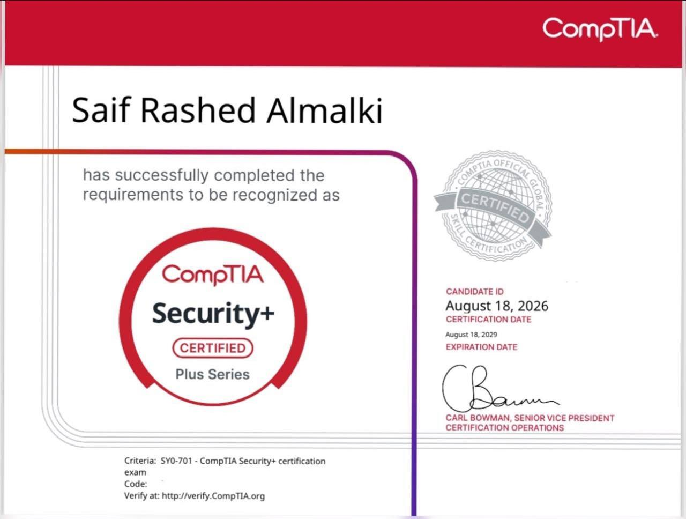
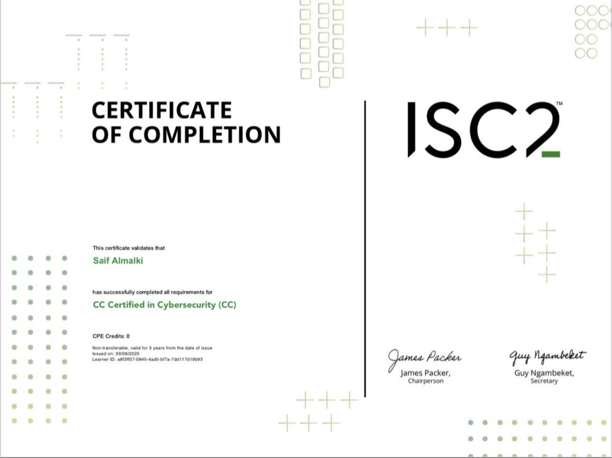
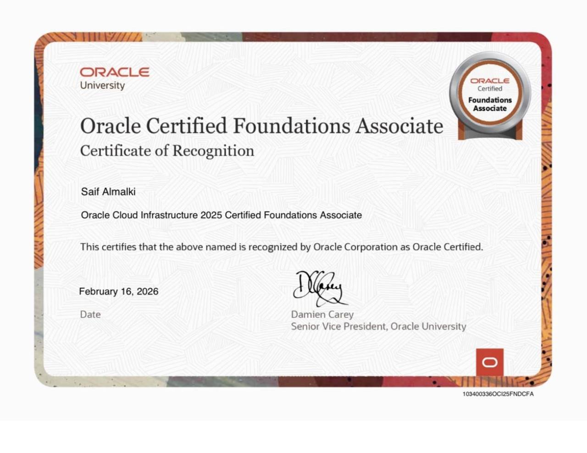

Member — Tuwaiq Academy
Active contributor to technical and cybersecurity communities.
CYBERSECURITY GRADUATE 🛡️ NETWORK DEFENDER
Defending critical infrastructure, hardening networks, and architecting zero-trust cyber defense systems.
$ whoami
Saif Almalki — Cybersecurity Specialist
$ cat degree.info
B.S. Cybersecurity [GPA: 3.75 / 4.00]
$ check --certs
[✓] CompTIA Security+ SY0-701
[✓] ISC2 Certified in Cybersecurity
[✓] Oracle Cloud Infrastructure (OCI)
$ status
> READY FOR DEPLOYMENT
Cybersecurity Specialist holding a Bachelor's degree in Cybersecurity from Umm Al-Qura University (GPA: 3.75/4.00) and an Associate Diploma in Information Security from University of Prince Mugrin.
Armed with high-calibre tactical expertise in network administration, threat modeling, and cloud defense mechanisms. Validated by industry certifications from ISC2, CompTIA, and Oracle.
Active contributor to technical and cybersecurity communities.
Commanded tech events, team organizing, and community operations.
Delivered 40 service hours in high-scale event management.
Engineered technical & professional growth competencies.
Competitor in National Olympiad for Scientific Creativity.
Engineered secure routing protocols, implemented access control lists (ACLs), and fortified device management planes in Cisco Packet Tracer topologies.
Built Python multi-threaded scripts using socket APIs to execute host discovery and vulnerability enumeration.
Intercepted and inspected PCAP traffic files to expose anomalous handshakes and cleartext credential leakage.
CompTIA • 2026

Cisco • 2027
ISC2 • 2025

Oracle • 2025

Available for cybersecurity engineering, SOC analysis, and network defense operations.